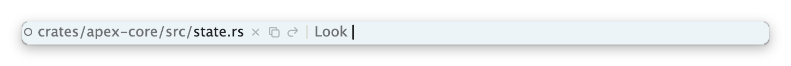
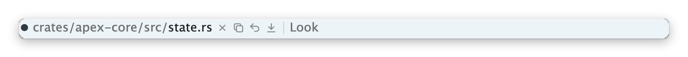
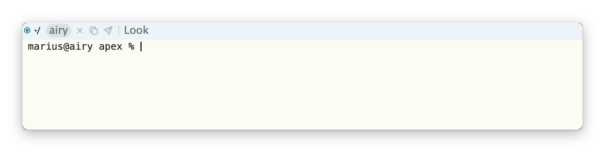
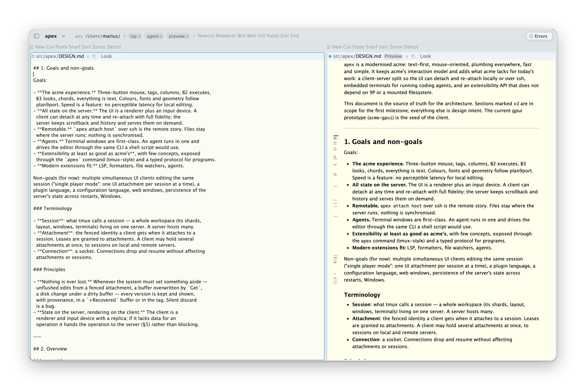
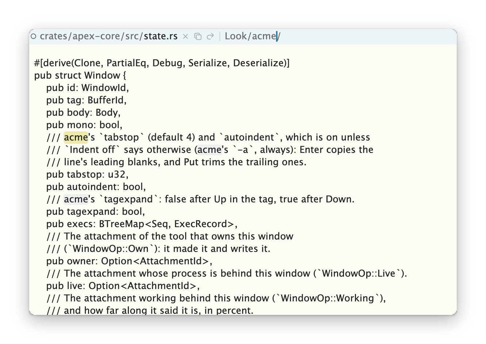
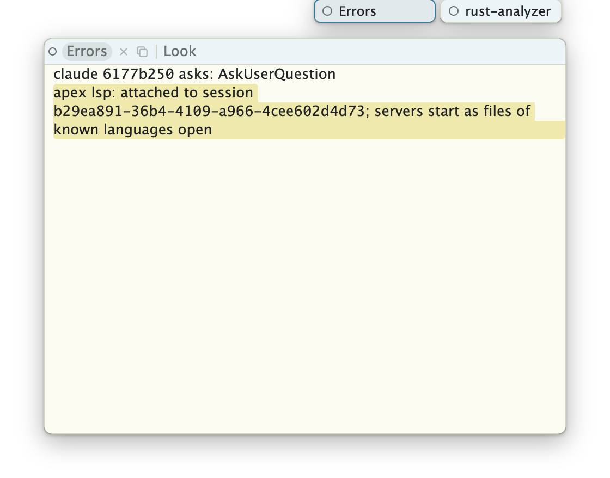
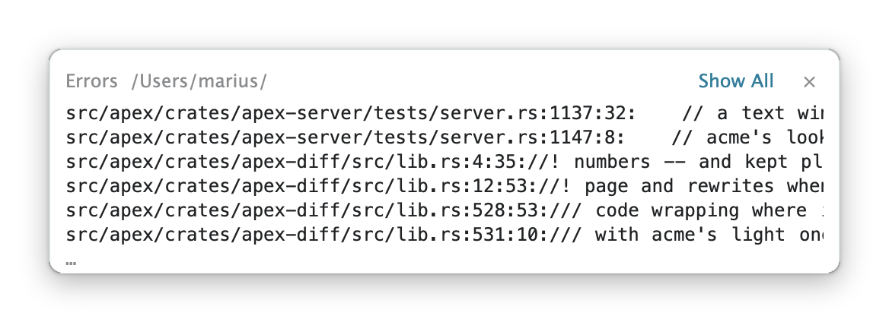

This guide describes how to use Apex. It assumes some familiarity with acme; Rob Pike's Acme: A User Interface for Programmers is still the best introduction to the ideas, and nearly all of it applies here. Russ Cox's tour of acme shows them in use. What follows covers what Apex does the same, what it does differently, and what it adds.
Build the app as described on the front page,
and move target/Apex.app to wherever you keep
applications. Then choose Apex ▸ Install apex Command…, so that the
apex command is on your path; you will want it.
When Apex starts, it attaches to the daemon on this machine, starting
one if none is running, and reopens the sessions you had open last time.
The first time, that is a single session called default.
Quitting Apex leaves the daemon and its sessions running: start Apex again
and everything is where you left it, including programs running in
terminals.
To make another session, press ⌘T, type a name, and pick Create. From a shell:
% apex new-session work ~/src/project % apex attach work
Apex's window is a set of columns, and each column a stack of windows, tiled as acme tiles them. Every window has a tag, a line of text above its body. Columns have tags too, and so does the whole window: its top row sits in the Mac's title bar. Tags are ordinary text: you can type in them, and anything in them can be executed.
A window's tag begins with what the window is, drawn from its state
rather than its text: the path (folders dim, the name strong), a label
when it has one (a terminal's title, say), and a few of Apex's own
commands drawn as icons (Del, Snarf, Undo, Put, and so on), faint until
the pointer is on the tag. After that comes the tag's own text, which
initially is just Look . A column's tag holds New Cut
Paste Snarf Sort Zerox Delcol, and the top row Newcol
Newterm Win Web Kill Putall Exit End.
At the left of each tag is the window's handle (acme's layout box), drawn as a dot: hollow when the window is clean, filled when it has unsaved changes, gold when the file has changed on disk underneath it. A ring in the accent colour means a program is live in the window; a spinning arc means it is working. A window that wants your attention has its tag tinted.



Window bodies come in three kinds: text, terminals, and pages (HTML, drawn by a web view). They are tiled, moved, and closed in exactly the same way.

The sidebar (⌃⌘S, or the button by the window's traffic lights) lists your sessions, grouped by host, and the windows of the one showing.
As in acme, the three buttons have fixed meanings everywhere, in tags and bodies alike:
| B1 | select text; drag to sweep |
| B2 | execute the text clicked or swept |
| B3 | look: open or find the text clicked or swept |
A click with B2 or B3 on unselected text expands to a word: for B2 the
run of characters that can appear in a command, for B3 a file name with
an optional address, such as main.rs:120. Clicking inside
the selection takes the whole selection. B2 and B3 sweeps are drawn in
their own colours (orange for B2, blue for B3), and what B2 ran blinks
briefly so that you can see it.
Chords work as in acme. While holding B1 after a sweep, click B2 to cut, or B3 to paste. While sweeping with B2, click B1 to run the command with the most recent selection as its argument.
Apex follows plan9port's mapping onto a single button:
| click | B1 |
| ⌥-click | B2 |
| ⌘-click | B3 |
| ⇧-click | B4 (see below) |
| force click | B3 |
To chord while sweeping with B1, press ⌥ to cut or ⌘ to paste. Holding ⌘ or ⌥ alone over text shows, on a small pill, exactly what a click would look at or run there.
Apex adds a fourth button. B4 (or ⇧-click) on a window opens a menu of
the commands that tools and plumbing rules offer for that window, such as
Preview on a Markdown file or Def once a
language server is running. The menu opens with the last choice under
the pointer, so a plain B4 click repeats it. B4 on a handle minimizes the
window or column instead. B5, a mouse's forward button, runs
Back.
B2 executes. If the text is one of Apex's built-in commands, Apex
does it; if a tool or plumbing rule offers the word for this window, that
tool does it; otherwise the text is run as a shell command in the
window's directory, with acme's $winid, $% and
$samfile set. Shell commands run through
rc, which is bundled.
Their output goes to the directory's +Errors window.
As in acme, a command may begin with |, <
or >: |cmd pipes the selection through
cmd, replacing it; <cmd replaces it with
cmd's output; and >cmd sends the selection
to cmd, its output to +Errors.
| Cut Paste Snarf | the usual; snarf is the system clipboard |
| Undo Redo | undo or redo in the window |
| Put [file] | write the window's file; Putall writes every dirty file |
| Get | reload the file (or reload a page) |
| Del | close the window; warns once if unsaved. Delete does not warn |
| New [name] | a new window, empty or on a file |
| Newcol Delcol | add or remove a column |
| Zerox | another window on the same text |
| Sort | sort a column's windows by name |
| Look [text] | search the body for text, or the selection |
| Edit cmd | run a sam command (see below) |
| Tab [n] | set or show the tab width |
| Indent on|off | automatic indentation |
| Font | toggle between the proportional and fixed fonts |
| ID | print the window's id |
| Send | append the selection (or snarf) to the body; in a terminal, type it |
| Stash | put the window away (see Arranging windows) |
| Newterm [cmd] | a new terminal, running a shell or cmd |
| Win [cmd] | acme's win: a shell in a text window |
| Web [url] | a web page |
| Kill name | kill running commands by name |
| Exit | close Apex's window; the session keeps running |
| End | end the session; warns once if anything is unsaved |
Edit takes the sam command language, as in acme, with
Plan 9 regular expressions: Edit ,x/foo/c/bar/. The file and
pipe commands (e, w, |, and so on)
are not supported yet; neither are X and Y.
⌘⇧P opens a palette of every command you might run in the window under the pointer: the words in its tag, the commands its tools offer, Apex's built-ins, and what was run recently anywhere in the session. Return runs one there, as B2 would.
B3 is acme's look, made programmable. The text clicked is offered to the session's plumbing rules in turn, and the first rule that takes it decides what happens. Out of the box:
file:line or
file:line:col opens it there; a directory opens as a listing
of its contents;⌘-B3 (⌃⌘-click on a laptop) asks for the definition of what was clicked, when a language server is running; ⇧⌘-B3 goes back. ⌘[ and ⌘] move back and forth through the places you've jumped from.
Typing in a tag's Look argument searches as you type if
it is written with a slash: Look/word. A closing slash lets
it contain spaces: Look/two words/. Each keystroke searches
again from where you began; when nothing is found, the argument is struck
through. Escape leaves the caret at the end of the match. ⌘F does all of
this for you: it puts the caret in the window's Look argument, ready to
type. ⌘G and ⌘⇧G find the next and previous matches. While a search is
going on, every match in the window is faintly highlighted.

Look/acme/: the match is selected, and the others are marked.Looking works in terminals and pages too, searching what they show (and a terminal's scrollback).
Windows and columns are arranged with their handles, as in acme:
| B1 click | grow the window a little; on a maximized window, restore the others |
| B2 click | maximize: the column's other windows shrink to their tags |
| B3 click | the window takes the whole column; the others hide behind it until B1 or B3 again |
| ⇧-click (B4) | minimize the window to its tag |
| drag | move the window, within its column or to another |
Column handles do the same for columns across the row. A minimized column becomes a slim strip; click it to bring it back. Dragging a window to the outer edge of a column splits off a new column for it, and the line between two columns can be dragged to resize them. While you drag, where the window or column would land is shaded.
The stash is a place to put windows away without closing them.
⌘M (or the command Stash) stashes the window under the
pointer. Stashed windows appear as a small hand of cards at the right of
the title bar. Hover over them to fan them out and see one, live: you can
work in it right there. Click a card to bring the window back where it was.
Anything that goes to a stashed window, such as a look or a notification,
brings it back as well.

As in acme, typing goes to the text under the pointer, not to a focused window. The caret that keys will go to is drawn in the accent colour and blinks; other carets are plain.
| ^U ^W ^H | erase the line, word, or character before the caret |
| ^A ^E | start or end of line |
| ^F | complete the file name before the caret |
| Escape | select what was just typed |
| ↑ ↓ | scroll the body; in a tag, expand or collapse it |
| Home End | return to where you were typing, or go to the top or end |
| ⌘Z ⌘⇧Z | undo, redo |
| ⌘X ⌘C ⌘V ⌘A | cut, copy, paste, select all |
Menu commands act on the window under the pointer:
| ⌘S ⌘R ⌘W | Put, Get, Del |
| ⌘N | a new window |
| ⌘O | open a file or folder in the session's directory |
| ⌘P | go to an open window or recently closed file |
| ⌘⇧O | the same, across all sessions |
| ⌘⇧P | run a command |
| ⌘F ⌘G ⌘⇧G | look, look again forwards, backwards |
| ⌘[ ⌘] | back, forward |
| ⌘M | stash the window |
| ⌘J | go to the next notification |
| ⌘T ⌘⇧W | open a session, close this session's tab |
| ⌘1 … ⌘9 | go to a session by position |
| ⌘⇧[ ⌘⇧] | previous, next session |
| ⌘⇧K | the session you were last in |
| ⌃Tab | walk sessions, most recent first |
| ⌘⇧\ | show all sessions |
| ⌃⌘S | show or hide the sidebar |
| ⌘+ ⌘− ⌘0 | bigger, smaller, actual size |
| ⌘, | edit your profile |
| ⌘⇧R | reconnect |
⌘P, ⌘O and ⌘⇧P open palettes that match what you type fuzzily. ⌘O lists every file under the session's directory; the listing and the matching are done on the session's host, so it is fast on large trees and on remote machines alike.
A window's path in its tag is a breadcrumb: click a folder, or the name, to list what is next to it, and type to narrow the list. Return opens the choice in a new window; ⌥Return opens it in place. Double-click the path to rename the window's file. Similarly, the session's directory is shown in the title bar; click it to change directory.
^F completes the file name before the caret, listing the choices when there is more than one.
A command's output and errors go to its directory's
+Errors window, as in acme. In Apex, though, that window is
created in the stash rather than over your work, and whatever is new in
it appears briefly in a toast at the lower right. B3 on a
file:line in the toast goes there; Show All shows the
window. Language servers and other tools report the same way.

+Errors. Each file:line can be clicked with B3.A window can ask for your attention: an agent waiting for an answer,
say, or a script running apex notify. Its tag is tinted,
the Dock icon shows a count, and ⌘J takes you to the oldest such window,
in whichever session it is. Other sessions wanting attention are marked
in the sidebar and the session menu.
The commands a session is running are shown as pills in the title bar.
Hover to see the full command; click × to kill it, B1 on its name to see
its output, B3 to go to the window it was run from. apex ps
and apex kill do the same from a shell.
Newterm opens a terminal in a new window, running your
shell in the directory it was run from; Newterm cmd runs a
command instead. The terminal is a full emulator (built on
libghostty), so anything that runs in
Terminal runs here. It is also a window like any other: B1 selects, B2
executes the text (or types a word nothing else takes into the
program), B3 looks, so a file:line in a compiler's output
opens the file.
| Send | type the snarf buffer into the terminal |
| Snarfout | snarf the last command's output |
| Clear | clear the scrollback |
| ⌘↑ ⌘↓ | previous, next prompt |
| ⌘⇧C | copy the last command's output |
The prompt commands need shell integration. Add this to your
.zshrc (or bash to your .bashrc):
eval "$(apex shell-integration zsh)"
A failed command is then also marked in the margin by its prompt.
A terminal's window is named after its directory and title, as win
names its window. Programs inside a session have $EDITOR set
so that, for example, git commit opens the message in a
window over the terminal; delete the window to finish. Programs that open
a URL or file through xdg-open or $BROWSER have
it plumbed into the session. And apex itself, run in a
terminal, acts on the session it is in.
Win runs acme's win: a shell in an ordinary text window,
which some still prefer.
Page windows show HTML. They are fetched through the session's host, so a page on a remote session sees that machine's files and network.
Preview, offered in the B4 menu on Markdown, HTML and
SVG files, opens a live rendering next to the file. It is redrawn as you
type and follows the caret. Other formats can be added with a converter,
a command that reads the file and writes HTML:
apex set Preview.rst 'pandoc -f rst -t html5'
Web url opens a web page, with back and forward buttons
and an address field in place of the tag. apex diff reads a
unified diff and shows it side by side, each line a link into its
file:
git diff | apex diff
A session is a whole workspace: its columns, windows, terminals, and the programs running in them. It lives in the daemon, not in the app. The app shows one session at a time, and keeps others open as tabs, listed in the sidebar. They stay attached in the background, so switching is instant. ⌘T opens the session picker, which lists the sessions on every host you know, lets you make new ones, and adds hosts.
Click the session's name in the title bar to rename it. Closing a tab
(⌘⇧W, or × in the sidebar) leaves the session running on its host;
End, or apex end-session, ends it.
Only one app leads a session at a time. If you attach to a session from another machine, the first app becomes a watcher: it still shows the session, live, but typing does nothing, and a banner offers to Take over. If the connection drops, the app reconnects by itself; the title bar says stalled or offline meanwhile.
A session can live on another machine. In the session picker, choose
Add a host… and give it an ssh destination, such as
me@box. Or from a shell:
% apex attach me@box/work
Apex copies its own apex and rc (built for
Linux, and bundled in the app) to ~/.apex/bin on the host
when needed, starts the daemon there, and talks to it over ssh. Nothing
else needs installing, and no files are synchronized: you are using
Apex on that machine.
Machines reached by something other than ssh use a provider,
a program named apex-remote-NAME on your path that runs a
command on the destination, as ssh does. Destinations are then written
NAME:dest. The providers directory in the
source has examples.
The View menu chooses the theme (six palettes, each light and
dark), the fonts, and a few preferences. Everything else is configured
with scripts of apex commands, as acme is configured with
shell scripts.
~/.apex/profile, on the session's host, is run (by rc)
whenever a session is made, in the session's directory. Its environment
when it finishes becomes the environment of everything in the session.
⌘, opens it. A profile might look like this:
apex set Newterm.shell zsh apex set Preview.dot 'dot -Tsvg' apex plumb rule add -text='#(\d+)' -client=open -args='https://github.com/me/repo/issues/$1' apex tool lsp & apex tool agent & GOFLAGS=-mod=mod
examples/profile in the source is a fuller example; among
other things it names terminal windows after their directories for zsh,
bash and fish.
~/.apex/attach, on the machine running the app, is run on
the session's host each time the app attaches; settings it makes belong
to that app alone.
apex set KEY VALUE makes a setting. These are the ones
Apex reads:
| Newterm.shell | the shell terminals run |
| Newterm.scrollback | lines of terminal history (10000) |
| Preview.EXT | a converter to HTML for files ending .EXT |
| lsp.LANG | the language server for go, rust, python, typescript or c |
| lsp.root | a file marking a project's root, for language servers |
The plumbing rules are the session's, and apex plumb rule
adds, lists and removes them. A rule matches text (anchored at both ends),
and optionally the window it is in: by file name, kind, or owning tool.
It then opens a file (-edit), runs a command
(-run), or asks a tool (-tool). The groups of
its pattern are $1, $2, …; $file,
$dir and $win describe the window. A rule with
-verb=Word instead of matching B3 adds Word to the B4 menu
of the windows it applies to:
apex plumb rule add -verb=Test -file='_test\.go$' -run='go test ./...'
apex plumb -dry-run text shows which rules would take the
text, and why the others didn't. apex help plumb describes
every flag.
apex tool lsp runs language servers for the session:
gopls, rust-analyzer, pyright, typescript-language-server and clangd by
default, one per project root. Once a server is ready, files in its
language get Def, Type, Refs,
Hov, Sig, Fmt and Rn
name in their B4 menus; ⌘-B3 is Def. Diagnostics go
to a stashed window per server, and show up as toasts.
Coding agents (Claude Code, Codex, and Muse) run in terminals like
anything else. apex tool agent makes them easier to live
with. Install its hooks once, then run it in a session (from its
profile, say):
% apex tool agent install % apex tool agent
Each agent's terminal is then marked while it works, and notifies you
when it needs an answer. Its B4 menu offers Transcript,
Preview (its last answer as a page), Changes
(a diff of what it changed), and Allow, Deny
and Ask for permission requests.
The apex command does everything the app does, and works
whether or not the app is running. Inside a session it acts on that
session; elsewhere, name one with -session. Windows are
named by id, path, or label.
| apex open file… | open files |
| apex new [path] | a new window, with stdin in it |
| apex win list | list the windows |
| apex text read win | print a window's text |
| apex edit win cmd | run an Edit command |
| apex exec win cmd | run a command, as B2 would |
| apex term new|send|read | terminals |
| apex plumb text | plumb text, as B3 would |
| apex events | stream every change to the session |
| apex ls | list sessions |
For example, to replace every TODO in a file and save it:
apex edit notes.md ',x/TODO/c/DONE/' apex exec notes.md Put
apex help lists every command, and apex help
cmd describes one. Programs can also attach to a session directly
with the Rust or Go libraries, or through apex tool bridge,
which speaks JSON; the wiki describes
how.